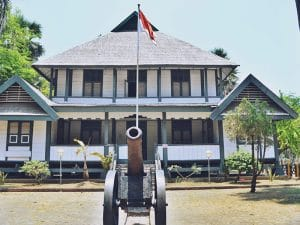

Jejak Kejayaan di Timur Indonesia
Sejarah Makassar adalah cerminan kejayaan maritim dan perlawanan terhadap kolonialisme. Kota ini dulunya merupakan pusat Kerajaan Gowa-Tallo yang kuat, sebuah kerajaan maritim yang menguasai jalur perdagangan penting di Nusantara bagian timur.
Kerajaan Gowa-Tallo dan Benteng Somba Opu
Pada masa jayanya, Kerajaan Gowa-Tallo, di bawah pimpinan Sultan Hasanuddin yang bergelar "Ayam Jantan dari Timur", menjadi kekuatan yang sangat diperhitungkan oleh VOC (Vereenigde Oostindische Compagnie). Salah satu peninggalan penting dari masa itu adalah Benteng Somba Opu.
Benteng ini, yang kini tinggal reruntuhan dan situs bersejarah, dulunya adalah pusat pemerintahan dan perdagangan Kerajaan Gowa-Tallo. Perlawanan gigih Sultan Hasanuddin dalam mempertahankan kedaulatan kerajaannya melawan VOC menjadi salah satu babak heroik dalam sejarah Indonesia.
Perubahan Nama dan Perkembangan Modern
Setelah kekalahan Gowa-Tallo, kota ini jatuh ke tangan VOC dan kemudian Belanda. Pada masa Orde Baru, nama kota ini diubah menjadi Ujung Pandang, mengambil nama benteng lama di Makassar. Namun, pada tahun 1999, nama Makassar dikembalikan, menegaskan kembali identitas sejarah dan budayanya.
Kini, Makassar terus berkembang menjadi kota metropolitan modern, namun tetap menjaga dan melestarikan warisan sejarahnya sebagai salah satu kota pelabuhan penting di Asia Tenggara.